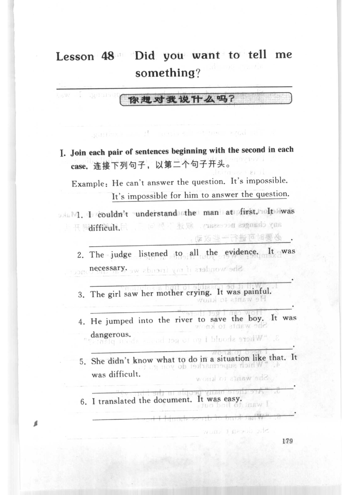
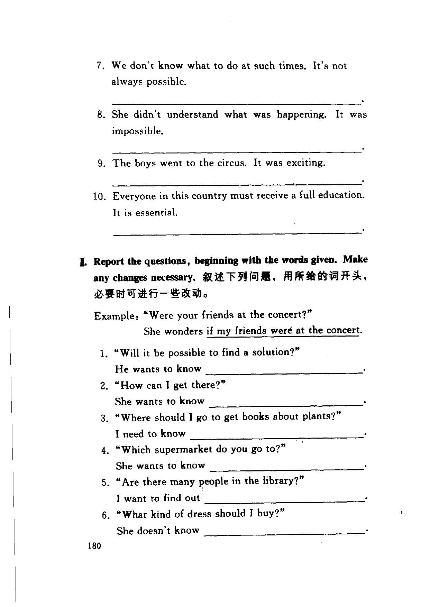
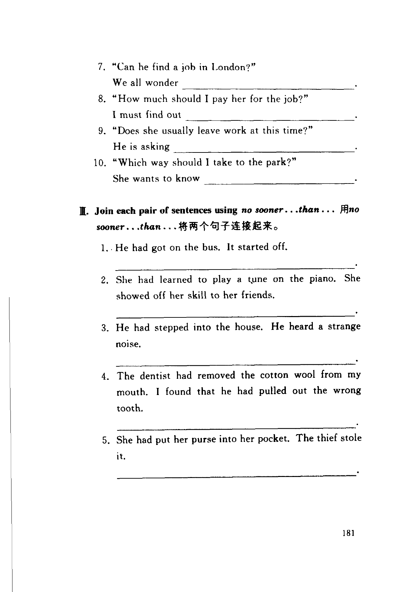
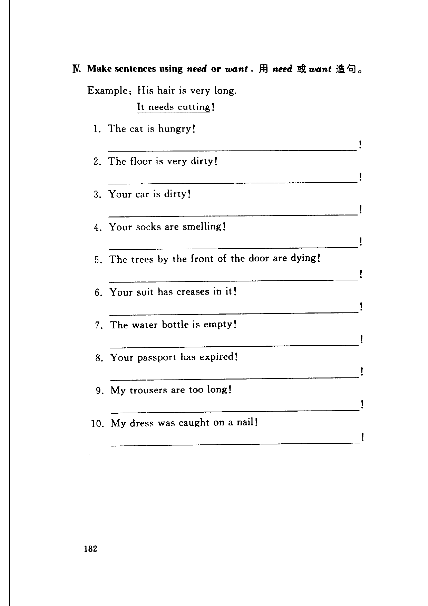

Grammar exercises · 语法练习
I. Join each pair of sentences beginning with the second in each case.
连接下列句子，以第二个句子开头。
Example: He can't answer the question. It's impossible.
It's impossible for him to answer the question.
-
I. It + adjective — I couldn't understand the man at first. It was difficult.
-
I. It + adjective — The judge listened to all the evidence. It was necessary.
-
I. It + adjective — The girl saw her mother crying. It was painful.
-
I. It + adjective — He jumped into the river to save the boy. It was dangerous.
-
I. It + adjective — She didn't know what to do in a situation like that. It was difficult.
-
I. It + adjective — I translated the document. It was easy.
-
I. It + adjective — We don't know what to do at such times. It's not always possible.
-
I. It + adjective — She didn't understand what was happening. It was impossible.
-
I. It + adjective — The boys went to the circus. It was exciting.
-
I. It + adjective — Everyone in this country must receive a full education. It is essential.
II. Report the questions, beginning with the words given. Make any changes necessary.
叙述下列问题，用所给的词开头，必要时可进行一些改动。
Example: “Were your friends at the concert?”
She wonders if my friends were at the concert.
-
II. Reported question — “Will it be possible to find a solution?”
He wants to know -
II. Reported question — “How can I get there?”
She wants to know -
II. Reported question — “Where should I go to get books about plants?”
I need to know -
II. Reported question — “Which supermarket do you go to?”
She wants to know -
II. Reported question — “Are there many people in the library?”
I want to find out -
II. Reported question — “What kind of dress should I buy?”
She doesn't know -
II. Reported question — “Can he find a job in London?”
We all wonder -
II. Reported question — “How much should I pay her for the job?”
I must find out -
II. Reported question — “Does she usually leave work at this time?”
He is asking -
II. Reported question — “Which way should I take to the park?”
She wants to know
III. Join each pair of sentences using no sooner…than….
用 no sooner…than… 将两个句子连接起来。
-
III. no sooner…than… — He had got on the bus. It started off.
-
III. no sooner…than… — She had learned to play a tune on the piano. She showed off her skill to her friends.
-
III. no sooner…than… — He had stepped into the house. He heard a strange noise.
-
III. no sooner…than… — The dentist had removed the cotton wool from my mouth. I found that he had pulled out the wrong tooth.
-
III. no sooner…than… — She had put her purse into her pocket. The thief stole it.
IV. Make sentences using need or want.
用 need 或 want 造句。
Example: His hair is very long.
It needs cutting!
-
IV. need or want — The cat is hungry!
-
IV. need or want — The floor is very dirty!
-
IV. need or want — Your car is dirty!
-
IV. need or want — Your socks are smelling!
-
IV. need or want — The trees by the front of the door are dying!
-
IV. need or want — Your suit has creases in it!
-
IV. need or want — The water bottle is empty!
-
IV. need or want — Your passport has expired!
-
IV. need or want — My trousers are too long!
-
IV. need or want — My dress was caught on a nail!
Original images · 原图对照
Expand a page to compare it with the transcription. Open the original in a new tab to zoom in.
展开原图核对文字，也可以在新标签页打开原图放大查看。
Book page 179 · Exercise I (It + adjective, example and items 1–6)
Open original · 打开原图 ↗ Download original · 下载原图


Book page 180 · Exercise I (items 7–10) and Exercise II (reported question, example and items 1–6)
Open original · 打开原图 ↗ Download original · 下载原图


Book page 181 · Exercise II (items 7–10) and Exercise III (no sooner than, items 1–5)
Open original · 打开原图 ↗ Download original · 下载原图


Book page 182 · Exercise IV (need or want, example and items 1–10)
Open original · 打开原图 ↗ Download original · 下载原图


Your notes and answers
Use this space for longer responses or exercises that do not have an individual answer box.